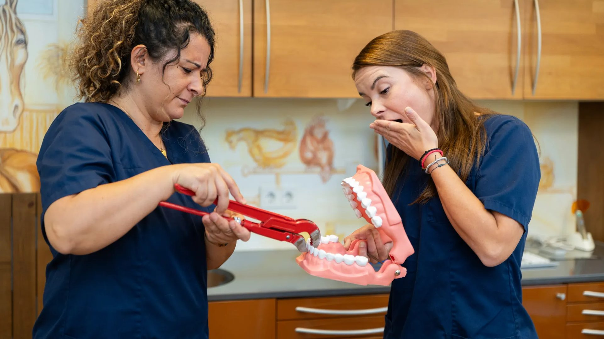
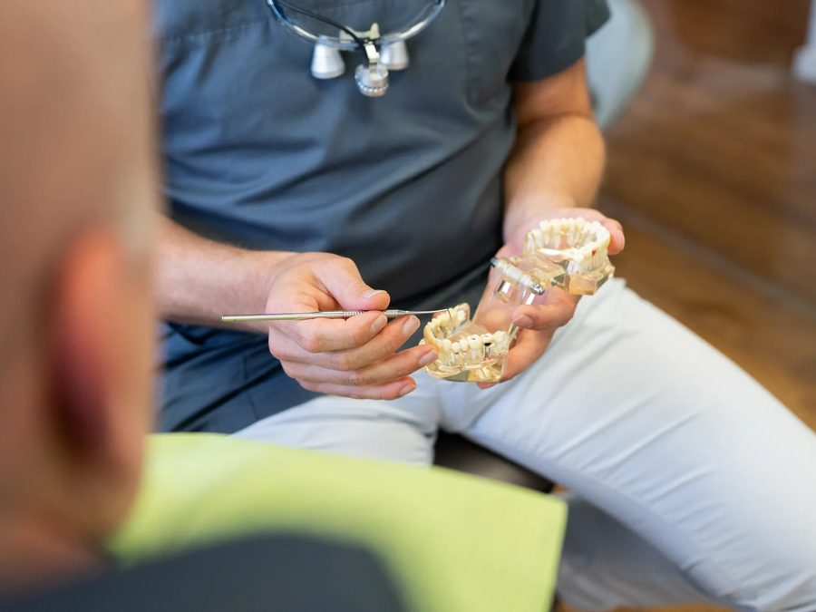
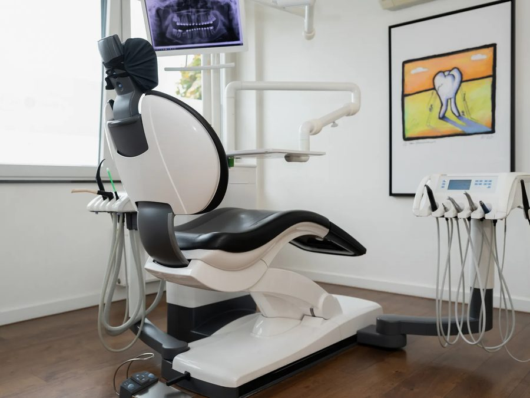

InitiativMeerbuschVollzeit / Teilzeit
ZMP / ZMF / DH / Zahnmedizinische Prophylaxeassistentin / Dentalhygienikerin (m/w/d)
Prophylaxe mit Herz und Know-how: professionelle Zahnreinigung, Beratung und individuelle Prophylaxe-Pläne im engen Zusammenspiel mit unserem Prophylaxe-Team.

Willkommen bei ZAHN & GUT
Das macht uns aus.
Wir sind ZAHN & GUT, eine moderne Gemeinschaftspraxis in Meerbusch. Bei uns stehen Teamgeist, Qualität und Menschlichkeit im Mittelpunkt. Wir bieten ein breites Behandlungsspektrum, von Zahnmedizin für Kinder bis Sofort-Implantologie, und schaffen eine Arbeitsatmosphäre, in der sich sowohl unsere Patienten als auch unser Team wohlfühlen.
Dein Aufgabenbereich
- Durchführung von professionellen Zahnreinigungen
- Anleitung der Patienten zu optimaler Mundhygiene und Prophylaxe-Maßnahmen
- Unterstützung bei der Diagnostik und Dokumentation von Prophylaxe-Maßnahmen
- Beratung der Patienten hinsichtlich individueller Prophylaxe-Pläne
- Enge Zusammenarbeit mit dem Prophylaxe-Team und anderen Fachbereichen
Dein Profil
- Abgeschlossene Berufsausbildung als zahnmedizinische Fachangestellte, Zahnarzthelferin / ZFA und eine Weiterbildung zur zahnmedizinischen Prophylaxeassistentin, ZMP, Fachassistentin ZMF oder ein Abschluss zur Dentalhygienikerin DH (m/w/d)
- Röntgenschein
- Grundkenntnisse mit Computern sind von Vorteil
- Kenntnisse über Hygiene- und Sicherheitsstandards in einer Praxis
Einblicke in unsere Praxis


Freu Dich auf
- Attraktive Bezahlung
- Wertgutscheine oder Einkaufsgutscheine
- Weihnachtsgeld
- Jahresbonus
- Team Frühstück
- Regelmäßige Teambesprechungen
- Mitarbeiterevents
- Jobticket
- Fahrtkostenzuschüsse
- Betriebliche Altersvorsorge
- Selbstverständlich: Wasser, Süßgetränke, Kaffee, Obst, Süßigkeiten
- Einarbeitungsplan
- Weiterbildungsmöglichkeiten
- Karrieremöglichkeiten
- Wiedereinsteiger und Berufseinsteiger sind willkommen
- Teilzeit Möglichkeiten
- 4-Tage-Woche
- Bei uns kannst Du mittwochs und freitags bereits um 13 Uhr in den Feierabend gehen
- Gute Parksituation
- Gute Verkehrsanbindung
- Klimatisierter Arbeitsbereich
- Kein Notdienst, kein Wochenenddienst
Bewerbung
Jetzt bewerben: ZMP, ZMF oder DH für die Prophylaxe
Unterlagen parat? Dann häng sie gerne an. Falls nicht, kannst Du auch ohne Unterlagen Kontakt aufnehmen. Wir melden uns in kurzer Zeit bei Dir.
Noch nicht das Richtige?
Schau Dir unsere anderen Stellen an oder bewirb Dich initiativ.